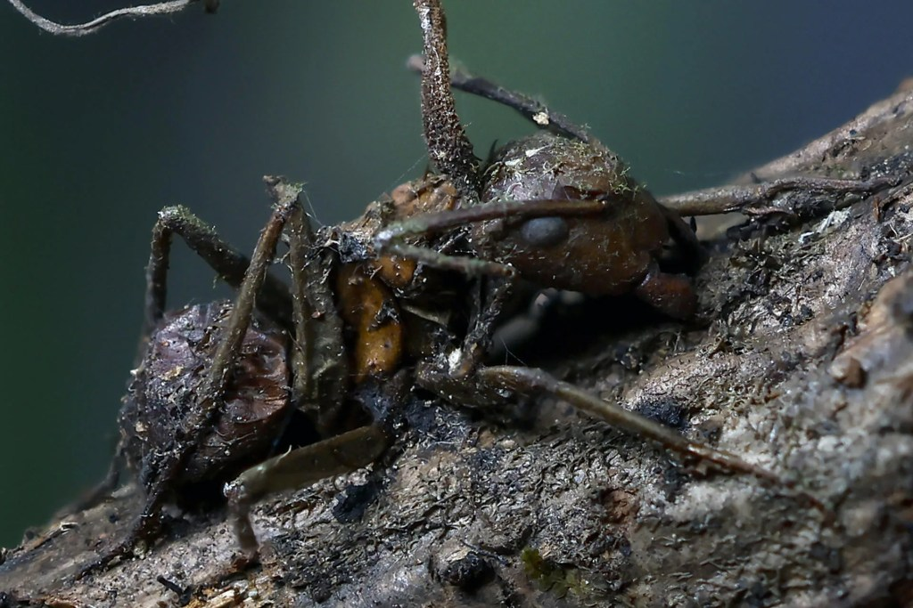
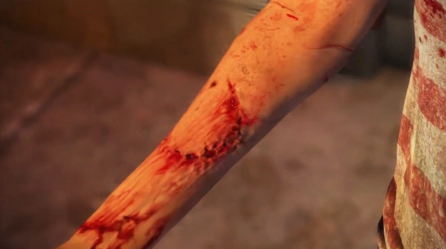
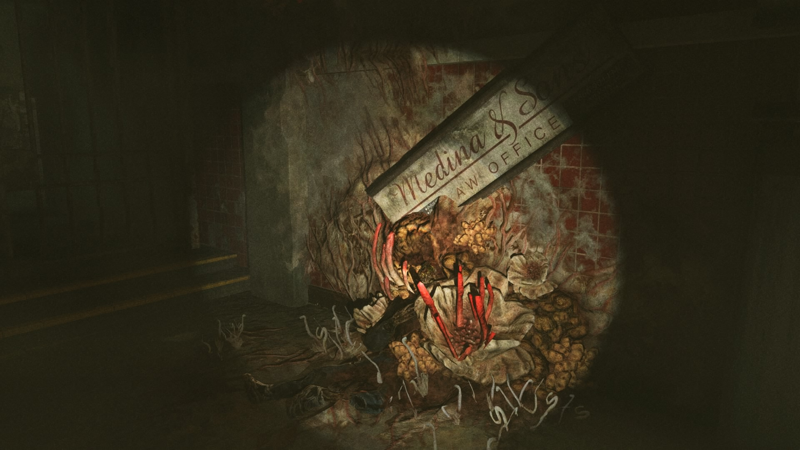

A specialist parasite
In tropical forests, spores can attach to a suitable ant and germinate. The fungus grows through the insect's body. This host relationship is highly specific; it is not a general infection risk in everyday human life.
A field guide · real biology / game fiction
Follow the trail from a remarkable ant parasite in nature to the imagined Cordyceps infection of The Last of Us—and explore how the infected change over time.
Begin the field report01 — The natural world
Ophiocordyceps unilateralis is a real parasitic fungus that infects certain carpenter ants. It is not the fungus from the game, and it does not infect people or turn them into zombies.
In tropical forests, spores can attach to a suitable ant and germinate. The fungus grows through the insect's body. This host relationship is highly specific; it is not a general infection risk in everyday human life.
Infected ants may leave their usual trails, climb vegetation, and clamp their mandibles onto a leaf or twig. After the ant dies, the fungus grows a stalk from its body and releases spores that can reach other ants.
A spore landing on a suitable ant can germinate, penetrate its outer covering, and grow through its body. The infected ant may climb and bite onto vegetation before dying. A fungal stalk then grows from the cadaver and produces spores, continuing the cycle among susceptible ants.
The Last of Us borrows the striking idea of a fungus altering an animal host’s behavior and spreading spores. It fictionalizes that idea into a human brain infection transmitted by bites and inhaled spores, with rapidly changing infected forms. The real ant fungus does none of this to people.
Reality check: scientists have documented striking behavior changes in infected ants, but the precise mechanisms are still being studied. This is a specialized host-parasite relationship—not a fungus consciously controlling a human mind.

02 — The fictional outbreak
In the games, infection spreads through bites and airborne spores. Select a stage to follow the transformation and view the matching infected portrait.


In the games, infection spreads through bites from infected and by inhaling airborne spores in contaminated spaces. Both are routes of Cordyceps infection.
This transmission and human Cordyceps infection are fictional; the real ant-infecting fungus does not spread to people this way.
Exposure pathways
Bites and airborne spores are the two infection routes shown in the games. In contaminated spaces, characters wear masks to avoid inhaling spores.
03 — Signs of progression
This guide uses an approximate progression: runners last up to two weeks, stalkers from around two weeks to a few months, and clickers for up to a couple of years. After that, the infected may become a bloater or shambler depending on the environment. These are guide estimates, not official timers stated by the games.
Runners are the earliest stage of the incubated infection. They remain fast and aggressive for up to two weeks. The games do not confirm whether runners remain consciously aware of their surroundings.
From about two weeks after infection until a couple of months, the infected remain in the Stalker stage. More visible fungal growth accompanies their hiding and ambush behavior; the original person no longer controls the body.
After the Stalker period, the infected becomes a Clicker. Clickers use clicking sounds to echolocate and find prey, and can remain at this stage for up to a couple of years before developing into a later form.
After the Clicker stage, a Bloater can develop in environments that favor this heavily armored fungal growth. Bloaters have thick fungal plates and can throw spore sacs. The games do not specify an exact time for this change.
After the Clicker stage, a Shambler can develop in damp environments such as parts of Seattle. Shamblers release clouds of acidic fungal material. Like Bloaters, they are a late form; which one develops depends on the surrounding environment.
The Rat King is a fused mass of at least 20 infected that merged over almost a decade in Seattle's hospital basement. It is a rare cluster of infected, not a standard stage every person reaches. The games show the fused mass but do not state an exact count or how long the merging took.
The six portraits above are crops from the poster you supplied. It was shared by Jason Oliva in a Facebook group post; the original poster artist and image rights are not identified in that post.
Timeline note: this is the approximate timeline used in this guide. Individual cases and environments can vary, and the games do not provide a precise clock for each stage.
04 — Seattle hospital / spoiler warning
Abby's descent beneath the hospital in The Last of Us Part II uses abandoned clinical spaces, environmental clues, and the WLF's aftermath to build dread. The record below separates what the scene establishes from what players infer.
What the location shows
The lower hospital is overrun and cut off from the safer, functioning areas above. Notes and traces of the failed response suggest that the sick were brought into the facility, but containment did not hold. Abby pushes deeper to find medical supplies for Yara.
What the encounter adds
The hospital's oldest infected are presented as a fused mass of multiple bodies. The Rat King is a rare, horrifying result of long-term infection in a sealed environment—not a regular next stage every infected person reaches.
The descent ends in a boss encounter with the Rat King, followed by a separated stalker-like infected that breaks away from it. The game never gives a clinical, step-by-step explanation of the fusion, so it is best read as environmental horror rather than a universal biological rule.
05 — Visual archive
Add your own in-game Photo Mode captures, or paste a direct image URL from a wiki page. Images you choose stay in this browser session; use the source field to credit the photographer or page.
Use a screenshot you captured in-game.
Paste a direct image address and add its source credit.
Respect each image's license and attribution requirements. A wiki page URL is not always a direct image URL; open the file page and copy the image address. The built-in illustrations above are original decorative artwork.
Further reading
The first section is about real fungal biology; the infected stages and transmission routes are fictional game lore.
Unofficial fan-made educational page. The Last of Us and its characters are the property of their respective rights holders. No game screenshots are bundled here.